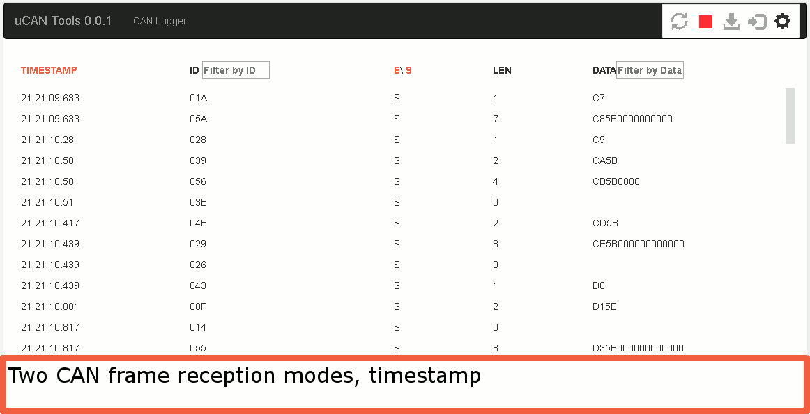

Open source web app for CAN bus access: terminal with filtering, remote log download and network configuration. Works with uCanDevices USB CAN, LIN and SENT converters.
uCANTools is web application that supports uCAN devices development, features list:
uCANTools web application can work on any computer with NodeJS environment. For quick start see CANEthernetConverter(CEC) project.
For node-red and MQTT for CAN frames processing tutorial ENG for PL click here

Product and its documentation is supplied on an as-is basis and no warranty as to their suitability for any particular purpose is either made or implied. Producer will not accept any claim for damages howsoever arising as a result of use or failure of this product. This product is not intended for use in any medical appliance, device or system in which the failure of the product might reasonably be expected to result in personal injury.
Visit https://github.com/CanEthernetConverter for sources.